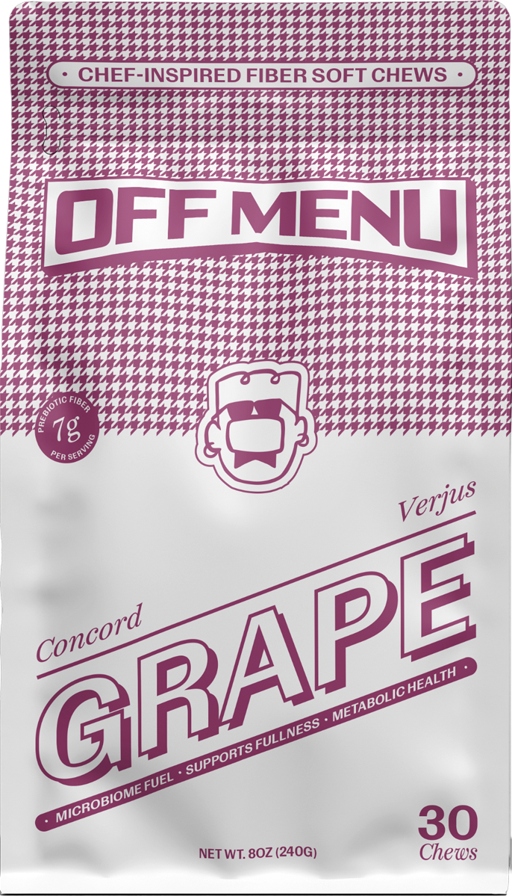
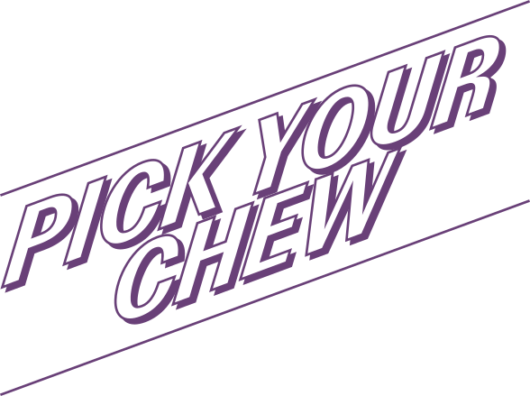
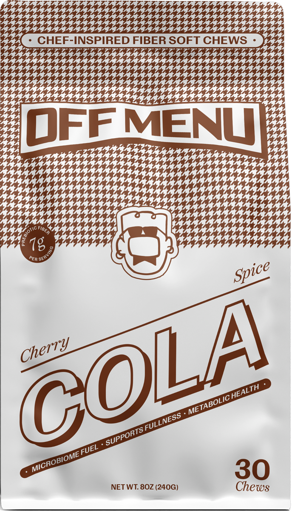
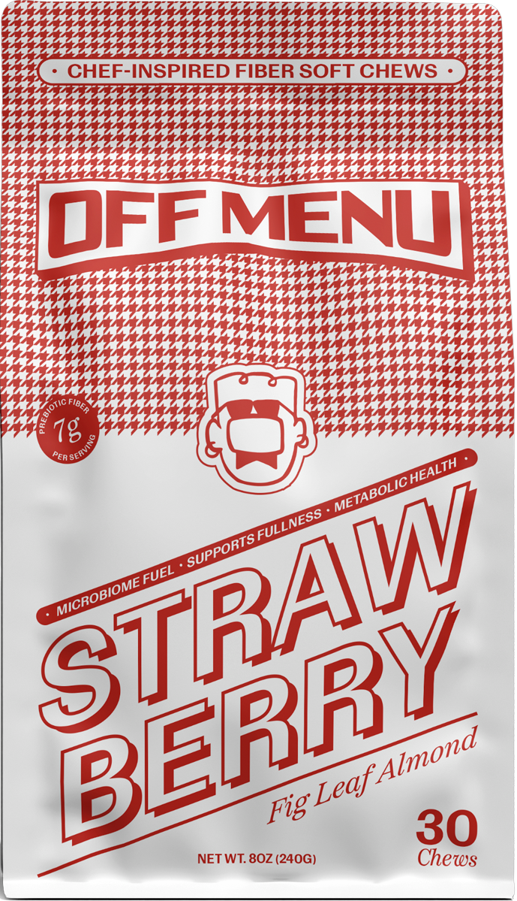
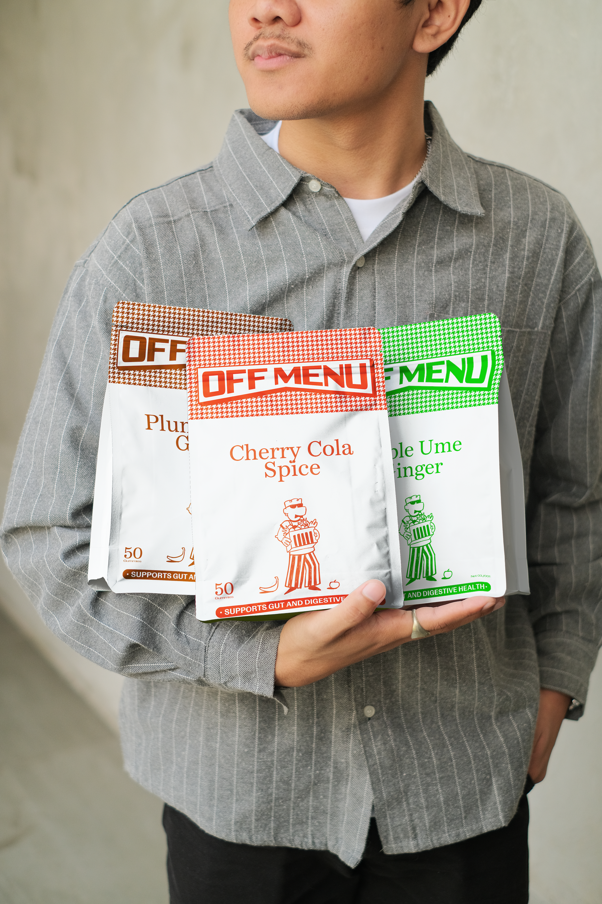
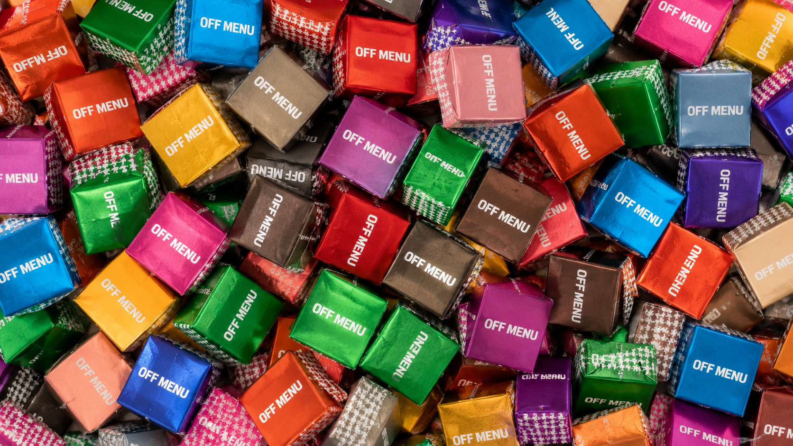

Concord Verjus GrapeCrisp apple, ume, a little ginger.






Prebiotic + probiotic fiber that supports digestive rhythm and a calmer gut — the unglamorous stuff, done well.
Flavor isn't decoration. If it tastes better, you take it more often — and the best supplement is the one you actually take.
Chef-led recipes, real ingredient thinking, and no sterile-pharmacy energy. Wellness with a menu point of view.

Join the list for the launch, early flavors, and the occasional chef's note.